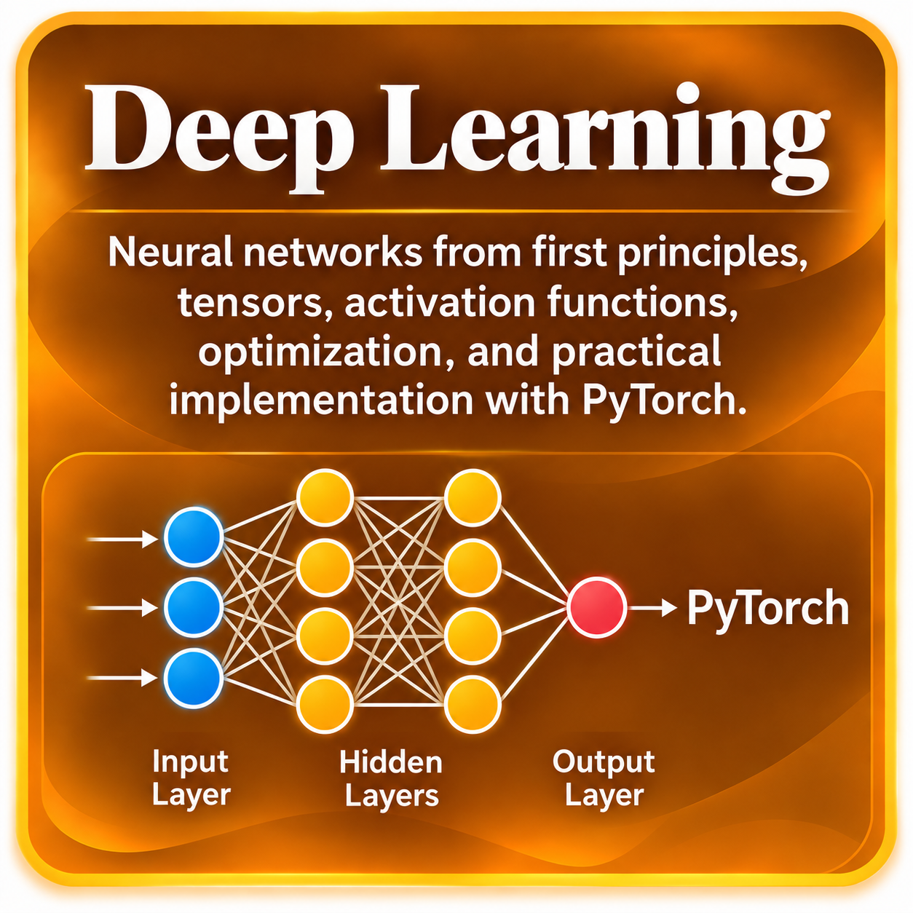

Tensors desde los fundamentos
Scalars, vectors, matrices y higher-dimensional tensors; shapes, dimensions e indexing.
Próximamente
Una ruta estructurada desde tensors y neural networks hasta CNNs, RNNs, Attention, Transformers y deployment.
Deep Learning puede parecer complejo porque combina álgebra lineal, cálculo, optimización y programación. Esta ruta organiza esas ideas en una secuencia progresiva para que cada concepto aparezca cuando ya cuentas con la intuición necesaria para entenderlo.
Comenzamos con tensors y la estructura de una neural network; luego estudiamos Forward Propagation, Loss Functions, Backpropagation y optimization. Después avanzamos hacia CNNs, sequence models, Attention, Transformers y entrenamiento práctico con PyTorch.

La ruta avanza desde tensors y neural networks hacia forward/backpropagation y optimization, luego CNNs y sequence models, y termina con Attention, Transformers, PyTorch y deployment.
Scalars, vectors, matrices y higher-dimensional tensors; shapes, dimensions e indexing.
Creación de tensors, reshape, transpose, broadcasting, slicing y operaciones básicas en PyTorch.
Qué es una neural network, layers, weights, biases, inputs y outputs.
Comprende weighted sum, bias y activation function como la unidad básica de una neural network.
Qué hace cada activation function, sus ventajas, limitaciones y cuándo se utiliza.
Aprende cómo viaja la información desde los inputs hasta la predicción final.
Estudia Mean Squared Error, Binary Cross-Entropy y Categorical Cross-Entropy.
Comprende cómo se propaga el error hacia atrás para calcular gradients y actualizar parámetros.
Relaciona Chain Rule, nodos, operaciones intermedias y cálculo sistemático de derivatives.
Learning rate, parameter updates, convergence y training dynamics.
Batch size, epochs, iterations y diferencias entre full-batch, SGD y mini-batch training.
Comprende cómo funcionan los principales optimizers y por qué Adam es tan utilizado.
Random initialization, Xavier/Glorot y He initialization.
Por qué aparecen, cómo afectan el entrenamiento y qué estrategias ayudan a controlarlos.
L1/L2, Dropout, Early Stopping y otras estrategias para reducir overfitting.
Qué normalizan, cómo funcionan y por qué pueden estabilizar y acelerar el entrenamiento.
Filters, kernels, feature maps, stride y padding.
Max Pooling, Average Pooling y extracción jerárquica de features.
Conecta convolutions, pooling y fully connected layers para resolver problemas de clasificación de imágenes.
Hidden states, sequences y memoria temporal.
Gates, long-term dependencies y por qué mejoran sobre vanilla RNNs.
Queries, Keys, Values y cómo Attention asigna importancia a diferentes partes de una secuencia.
Self-Attention, Multi-Head Attention, positional encoding y Transformer blocks.
nn.Module, layers, forward method, loss, optimizer, training loop y evaluation.
Training, validation, saving models, inference, GPU/CPU, monitoring y deployment.
Primero construimos la representación de datos con tensors y la estructura de neurons y layers. Después seguimos el flujo natural de una predicción: Forward Propagation → Loss → Backpropagation → Gradient Descent y Optimizers.
Con esa base, estudiamos regularization, normalization y los problemas de vanishing/exploding gradients. Luego pasamos a arquitecturas especializadas: CNNs para imágenes y RNNs, LSTMs y GRUs para secuencias.
Finalmente, Attention y Transformers conectan la ruta con arquitecturas modernas, mientras que PyTorch y el Deep Learning Lifecycle llevan la teoría hacia implementación, inference, monitoring y deployment.